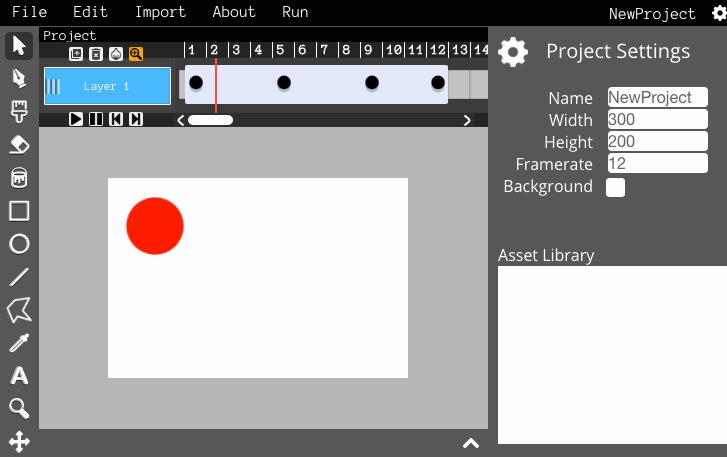
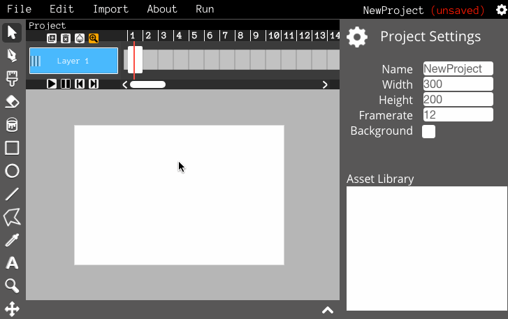
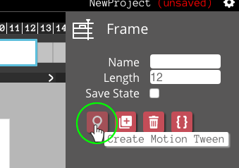
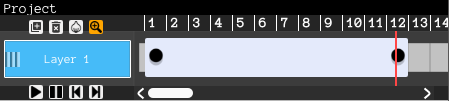
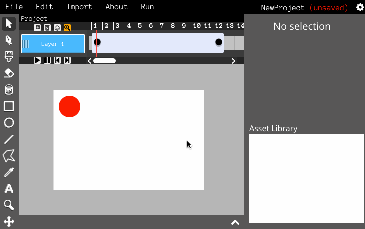
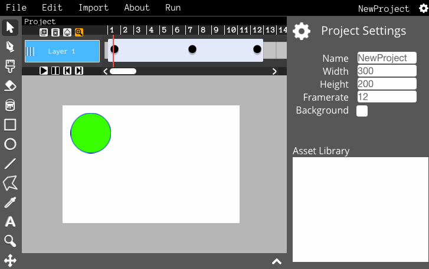
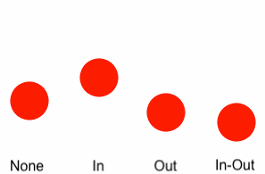
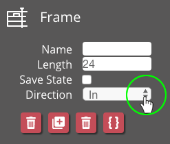

Motion tweens are useful! You can use them to smoothly animate objects from one place to another.
Let's make our first motion tween! Start by drawing something on the first frame of your project. Now, drag the right edge of the frame to make it longer.
Now let's make a tween! Click on the beginning of the long frame and then click the "Create Motion Tween" button in the Inspector.
The frame has a little dot now. This represents the start of the tween. Now, do the same at the end of the frame.
Now you should have two dots on the frame - their frames are the keyframes of the tween.
Now click on the second keyframe and move the object somewhere else and then press the play button. You've just created a motion tween from one place to another!
Try adding more keyframes or rotating/scaling/changing the objects opacity to create some nice effects!
"Easing" allows you to control the speed of the tween! There are four options: None, In, Out, and In-Out.
You can select which easing direction your tween uses by clicking the "Easing" dropdown menu in the Inspector.
